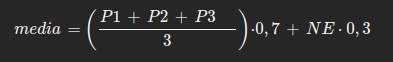
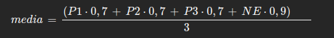

Como adicionar/atualizar disciplinas
Se não encontrou a disciplina que estava procurando, ou ela está desatualizada, siga o tutorial abaixo para saber como você deve proceder.
⚠️ Melhor visualização no modo claro.
🔗 Tutorial para execução local
Comece fazendo um fork do repositório original para o seu próprio perfil no Github.
Clone o repositório forked para sua máquina local usando o seguinte comando no terminal:
git clone https://github.com/seu-username/nome-do-repositorio.gitAbra o arquivo assets/json/disciplinas.json e adicione uma nova entrada seguindo o padrão fornecido. Por exemplo:
{
"c2-yoko": {
"id": 2,
"url": "c2-yoko",
"nome": "C2 - Yoko",
"qtdCampos": 4,
"nomeCampos": ["P1", "P2", "P3", "NE"],
"pesos": [0.7, 0.7, 0.7, 0.9],
"mediaAprovacao": 5,
"dividePor": 3,
"ultimaAtualizacao": "2023.1"
},
}
⚠️ Se necessário, devido as limitações do projeto, ajuste a fórmula de cálculo da média para a nova disciplina. Note que o script irá fazer as multiplicações dos valores inseridos pelo usuário pelos respectivos pesos (disponíveis no campo "pesos" separados por vírgula. Ex: "pesos": [0.7, 0.7, 0.7, 0.9]). Em seguida será feita a soma dos valores e posteriormente a divisão (O divisor é informado no campo "dividePor". Ex: "dividePor": 3).
Uma média dada pela fórmula: , deve ser manipulada (colocar um denominador comum. MMC) para que chegue em algo como:.
Certifique-se de ajustar o id e a url para garantir unicidade e conformidade com o padrão.
Abra o arquivo assets/js/search.js e adicione uma nova entrada para a disciplina. Por exemplo:
{
name: 'Cálculo 2 - Yoko',
url: 'c2-yoko',
tags: ['cálculo', 'yoko', 'c2']
},
Não esqueça de realizar testes para checar o bom funcionamento das suas alterações.
Depois de realizar as alterações, adicione, realize o commit e faça o push para o seu repositório no Git.
Finalmente, vá para o Git e crie um Pull Request para contribuir com as suas alterações de volta para o repositório original. Suas alterações serão revisadas e, se tudo estiver correto, a nova disciplina será incorporada ao projeto.